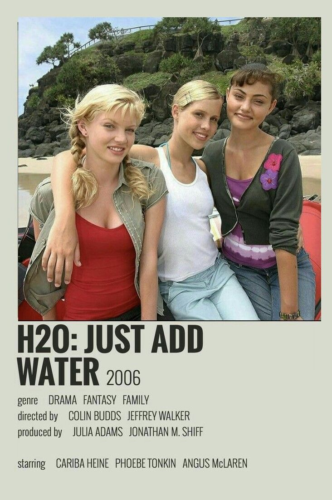

RESUMEN Y OPINIÓN
Hannah Montana
Revivimos las aventuras de Miley Stewart y su doble vida.
VER VIDEO →
Desde las series que marcaron nuestra infancia hasta las producciones que nos mantienen frente a la pantalla. Revivimos sus historias, analizamos sus personajes y compartimos nuestras opiniones.
EXPLORAR SERIESLas series tienen algo especial: nos permiten acompañar a sus personajes durante años, emocionarnos con sus aventuras y recordar momentos que se quedan con nosotros. Aquí les damos el espacio que merecen.

Un mundo donde los cuentos de hadas cobran vida y cada personaje tiene una historia que contar. Descubre nuestros análisis y opiniones sobre esta inolvidable serie.
VER EN YOUTUBEResúmenes, opiniones, análisis y recuerdos de nuestras series favoritas.
Revivimos las aventuras de Miley Stewart y su doble vida.
VER VIDEO →



Una nueva historia que pronto recordaremos juntos.
Algunos personajes nos acompañan mucho después de terminar una serie. Exploramos sus decisiones, sus conflictos, sus relaciones y las razones por las que sus historias nos conmueven.
DESCUBRIR ANÁLISIS
Disfruta de nuestros resúmenes y opiniones directamente desde YouTube.